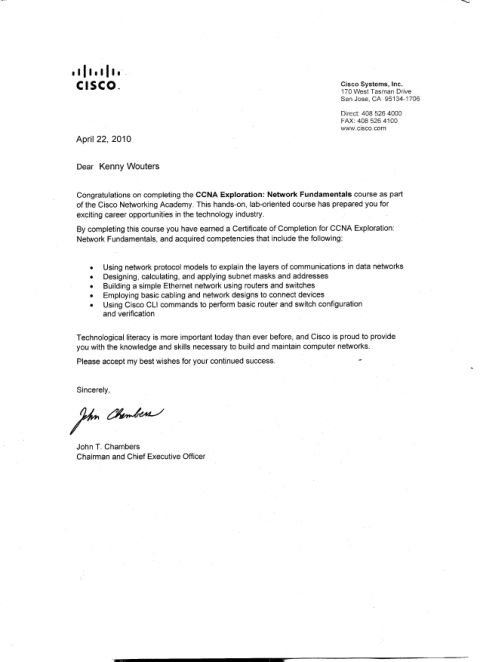

Documents
Attestations de formation et certificats. Cliquez sur un document pour l'ouvrir en taille réelle.

Junior Developer
BeCode Liège · 2024
Ouvrir le PDF →
Screening Technicien de maintenance en informatique
Forem · 11/2025 · profil de compétences validé
Ouvrir le PDF →
CCNA Exploration : Network Fundamentals
Cisco Networking Academy · 04/2010
Ouvrir le PDF →
IT Essentials : PC Hardware and Software
Cisco Networking Academy · Technobel · 02/2010
Ouvrir l'image →